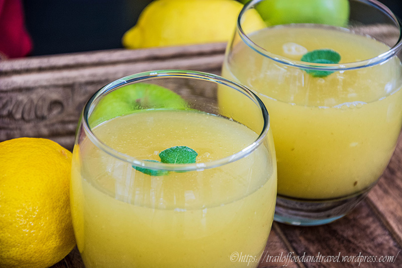
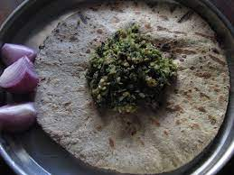

Popular Dishes In Maharashtra
PAVBHAJI

Pav Bhaji is probably the most popular dish of Maharashtra. You
would definitely find it everywhere in the country. Just like you must eat pizza in Italy, you cannot miss
out on pav bhaji in Maharashtra. So, during your next visit to Mumbai, do not forget to snack on the
appetising Pav Bhaji before retiring in one of the hourly couple friendly hotels in Andheri.
MISAL-PAV

Another popular pav preparation from Maharashtra is Misal Pav. A
spicy and tangy curry of lentils with the pav bread is the delightful treat of Misal Pav. Sometimes, yogurt
is accompanied with the dish to taper down the spiciness. Depending on the place of origin, there is a
variety of Misal Pav like Nagpuri Misal, Mumbai Misal and Puneri Misal. Do not forget to savour the
toothsome delight before retiring in one of the hourly couple friendly hotels in Nagpur for the day.
PURAN-POLI

The Marathi New Year, Gudi Padwa is celebrated extensively
in Maharashtra. Puran Poli is the signature dessert of Gudi Parwa. Yellow gram is grind to form a paste. The
paste is cooked with jaggery, ghee and cardamom to make the filling of the paratha. The sweet paratha is a
delightful dessert with a wholesome meal.
MAS-VADI

A popular Maharashtrian dish which is mostly prepared in Pune, Marathwada
region using besan or gram flour as a main ingredient, the variety of masalas, onion, coconut, coriander,
and garlic.Masvadi is a traditional Maharashtrian recipe. In this recipe spicy and delicious stuffing
is stuffed in cooked besan. This vadi is then dipped in spicy and hot rassa.
VADA-PAV

Vada Pav is another pav preparation from the appetising treasure
trove of the cuisine of Maharashtra. It is an Indian burger. The potato patty is deep fried and extremely
delicious. The spices, sauces and chutneys added to the Vada Pav enhance the taste further. A variety of the
Vada Pav is the Bhajiya Pav. It consists of onion fritters instead of potato patties. After reaching Pune, freshen
up in one of the hourly couple friendly hotels in Viman Nagar and start your
vacation with the lip-smacking Vada Pav.
PITHAL

Gram flour is mixed and cooked with a variety of spices to prepare
the curry. The semi-solid pithla curry is close to the North Indian Kadhi without the yoghurt. It is very
delicious and makes a wholesome meal with flatbreads or Bhakri. The sumptuous meal would keep you away from
snacking till you check into one of the hourly hotels in Khar.
SOLKADHI

The delightful appetizer is prepared by mixing coconut milk
with kokum fruit and other spices. The healthy drink is renowned for the digestive properties as well. As you
spend the day sight-seeing, after checking out from one of the hourly hotels in Santacruz, the healthy drink
would surely help to keep your health woes away.
KAIRI-PANHA

The refreshing raw mango drink is a summer specialty. If you
visit Maharashtra during the summer season do not forget to savour the drink. It is a soothing
drink under the scorching sun. As you relax in one of the hourly day-use hotels near Kurla,
you can unwind over a Kairi Panha Cha..
BASUNDI

Basundi is another dessert from the treasure trove of desserts
from Maharashtra. Sweetened milk is condensed and mixed with cardamom and saffron to prepare the sweet.
A variety of fruits are mixed with the sweet condensed milk to add flavor and taste. You can end your day on
a sweet note in one of the hourly hotels in Pune with a bowl of Basundi.
THECHA-BHAKARI

A Khandeshi meal is assumed to be incomplete without Kalnyachi
Bhakar and Thecha! Bhakri i.e. the Bhakar is made from black udad dal and jawar while thecha is prepared
using tomatoes or green chillies.
So if you want a reprieve from your daily dal,
roti, sabzi.. our Thecha Bhakar is one spicy yet tasty and healthy option!
VARAN-BATTI

Varan Batti is generally a recipe from Khandesh region.
These are famously known as Dal Baati in Rajasthan.
CHIVALICHA-ZUNKA

In some places we call it as “ Pith Perun Bhaji”. It is
prepared in almost all homes across the state and is a common, daily meal in rural Maharashtra. Chiwali Cha
Zunka is a simple traditional Mahrashtrian dish, with just few ingredients as well as quick and delicious
in taste. It tastes best when served with hot chapatti/ jowar bhakri. Chiwali chi Bhaji is a healthy, leafy
vegetable found in the Vidarbha region. This delicacy is savoured in eastern Maharashtra region. Maharashtrians
use lots of leafy vegetables in their day-to-day cooking. It was mandatory to eat
leafy greens every day when we were kids.
KANDAPOHE

Kanda Poha is a traditional maharashtrian dish, usually
served for breakfast or even as snack and served with
Masala chai, and loved by all of India. It's a
simple dish consisting of flattened rice with onions and peanuts..
TILGUL

Makar Sankranti usually falls on January 14 of the Gregorian
calendar. Maharashtrians exchange tilgul or sweets made of jaggery and sesame seeds along with the customary
salutation, tilgul ghya aani god bola (Marathi: तीळगुळ घ्या आणि गोड गोड बोला), which means "Accept the
tilgul and be friendly." Tilgul Poli or gulpoli are the main sweet preparations. It is a wheat-based
flatbread filled with sesame seeds and jaggery
MODAK

Modak is said to be the favorite food of Ganesh. An
offering of twenty-one pieces of this sweet preparation is offered on Ganesh Chaturthi and other minor
Ganesh-related events. Various Maharashtrian communities prepare different dishes
specially for Gauri poojan.